Zum Vergrößern, Verkleinern und Verschieben des Bildausschnitts stehen folgende Funktionen zur Verfügung.
Zoom- und Verschiebefunktionen in der unteren Menüleiste
Funktion |
Beschreibung |
So führen Sie die Funktion aus |
|---|---|---|
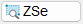 |
Zoom setzen (Fenster) Skaliert die Ansicht auf den per Mausklick zu wählenden Bereich. [1.Zoompunkt; 2.Zoompunkt]. |
§Klicken Sie auf die Schaltfläche. Alternativ: Drücken Sie die Funktionstaste F1 auf Ihrer Tastatur (Standardhotkey). §Klicken Sie einen Eckpunkt des Ausschnitts, den Sie vergrößern möchten, mit der linken Maustaste an. §Lassen Sie die linke Maustaste los und bewegen Sie den Cursor zum gegenüberliegenden Eckpunkt, um einen Rahmen aufzuziehen. §Wenn der Rahmen den gewünschten Ausschnitt umfasst, klicken Sie die linke Maustaste an. |
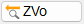 |
Zoom vorher Verwendet die zuletzt eingestellte Ansichtsvergrößerung. Ist mehrfach, bis zur maximalen Größe, möglich. |
§Klicken Sie auf die Schaltfläche. |
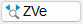 |
Zoom verschieben Ansicht fokussieren oder gezielt verschieben. Der Zoomfaktor bleibt erhalten. |
§Klicken Sie auf die Schaltfläche. Alternativ: Drücken Sie die Funktionstaste F3 auf Ihrer Tastatur (Standardhotkey). §Um die Ansicht auf einen beliebigen Punkt zu fokussieren, klicken Sie die Position des neuen Mittelpunktes an. [X-Wert oder Neuer Mittelpunkt]. §Um die Ansicht um einen bestimmten Wert zu verschieben, geben Sie die X-/Y-Werte ein (Eingabe in Meter, unabhängig von der Eingabeeinheit). Bestätigen Sie jeweils mit der Eingabetaste. [X-Wert oder Neuer Mittelpunkt]; [Y-Wert]. |
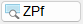 |
Zoom Plotfläche Setzt die Ansicht auf die Größe der Plotfläche zurück. Außerhalb der Plotfläche befindliche Elemente bleiben unberücksichtigt. |
§Klicken Sie auf die Schaltfläche. Alternativ: Drücken Sie die Funktionstaste F2 auf Ihrer Tastatur (Standardhotkey). |
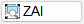 |
Zoom Alles Zeigt alle Zeichenelemente, die sich auf der gesamten Zeichnung befinden. Auch Elemente außerhalb der Plotfläche werden angezeigt. |
§Klicken Sie auf die Schaltfläche. |
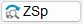 |
Aktuellen Zoom-Ausschnitt speichern. Gespeicherte Zoom-Ausschnitte können mit [ZAb] wieder aufgerufen werden. Diese Ausschnitte werden mit der Zeichnung gespeichert. |
§Klicken Sie auf die Schaltfläche. Ein kurzes Aufblinken eines Rahmens um die Zeichenfläche signalisiert, dass der Zoom-Ausschnitt gespeichert wurde. |
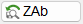 |
Abruf eines gespeicherten Zoom-Ausschnitts. |
§Klicken Sie auf die Schaltfläche. Im Programmfenster werden die gespeicherten Zoom-Ausschnitte in der Farbe für Markieren umrandet; [Option | SysDat | Farbeinstellungen | Konstruktionsprogramm | Markieren]. Die aktuell sichtbare Zeichenfläche wird mit einem schwarzen Rahmen gekennzeichnet, wenn Sie den Cursor in das Fenster bewegen. §Klicken Sie den Zoom-Ausschnitt an, der in der Zeichenfläche angezeigt werden soll. Die Ansicht in der Zeichenfläche wird aktualisiert und das Programmfenster geschlossen. 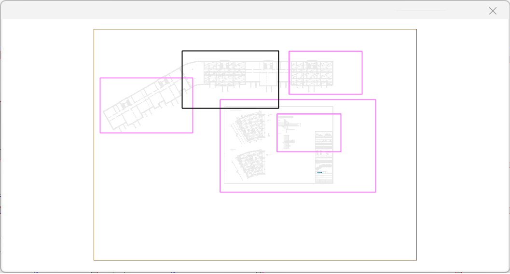 Das Löschen nicht mehr benötigter Ausschnitte ist im erweiterten Übersichtsfenster möglich. Im Dialog können Zoom-Ausschnitte ebenfalls gespeichert und mit dieser Funktion abgerufen werden. |
Schnellzoom (Mausgesten)
Sie können mit einer einfachen Mausbewegung die gewünschte Zoom- oder Verschiebefunktion aufrufen. Führen Sie z. B. auf der Zeichenfläche eine Mausbewegung in Form eines "Z" aus, um alle Elemente anzuzeigen, die sich innerhalb und außerhalb der Plotfläche befinden.
So führen Sie eine Mausgeste aus
§Drücken und halten Sie die linke Maustaste.
§Bewegen Sie den Cursor vom Anfangspunkt bis zum Endpunkt und lassen Sie anschließend die Maustaste wieder los.
Die Funktion wird ausgeführt.
Funktion |
Anmerkung |
Mausgeste |
|---|---|---|
Zoom setzen [ZSe] |
Die Länge der Linie entspricht der Diagonalen des Rechtecks. [1.Zoompunkt; 2.Zoompunkt]. |
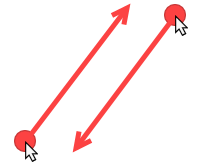 |
Zoom vorher [ZVo] |
Sie können die Funktion entweder durch eine Mausbewegung von links nach rechts oder umgekehrt ausführen. |
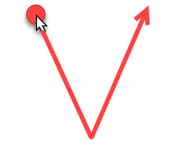 |
Zoom Plotfläche [ZPf] |
Sie können die Funktion entweder durch eine Mausbewegung von links nach rechts oder umgekehrt ausführen. |
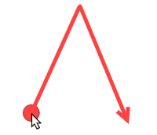 |
Zoom Alles [ZAl] |
Diese Funktion kann nur durch eine Mausbewegung von links nach rechts ausgeführt werden. |
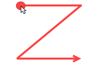 |
Horizontales Verschieben |
Bildausschnitt horizontal verschieben. Von links nach rechts: Verschiebung nach rechts. |
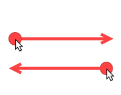 |
Vertikales Verschieben |
Bildausschnitt vertikal verschieben. Von unten nach oben: Verschiebung nach oben. |
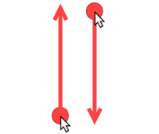 |
|
Hinweis: |
|
Der Mindestabstand der Punkte ist in den Systemdaten definiert. Mit der Standardeinstellung (30 Pixel) muss die Maus mindestens 31 Pixel weit bewegt werden. |

Zoomen und Verschieben mittels Mausrad
·Drehen: Der Bildausschnitt wird vergrößert oder verkleinert (Zentrum ist der Cursor).
·Gedrückt halten und Maus bewegen (Pan): Der Bildausschnitt wird mittels gedrückter mittlerer Maustaste (Scrollrad) verschoben. Halten Sie das Scrollrad gedrückt während Sie die Maus bewegen. Der Bildausschnitt wird in Echtzeit verschoben. Die Lage des Pansymbols ist an der Stelle fixiert, an der Sie das Scrollrad gedrückt haben. Die Zeichnung wird unter dem Zoomausschnitt verschoben. Um das Verschieben zu beenden, lassen Sie das Scrollrad wieder los.
» Mausfunktionen
Zoom mittels Tastatur
|
Schrittweise vergrößern/verkleinern |
+ + |
Schrittweise verschieben Schrittweise verschieben mit größerer Schrittweite |


Verschiebefunktionen
Nutzen Sie unter dem Übersichtsfenster die Pfeiltasten, um den Bildausschnitt schrittweise in Pfeilrichtung zu verschieben. Durch Klick auf die Schaltfläche 1 oder 10 legen Sie fest, ob Sie den Ausschnitt um eine ganze Bildschirmabmessung oder um ein Zehntel verschieben möchten. |
Zoomcontrol
Das Zoomcontrol lässt sich an jede beliebige Stelle der Zeichenfläche verschieben. Solange Sie die linke Maustaste auf einem der Richtungspfeile gedrückt halten, wird der Bildausschnitt kontinuierlich in diese Richtung verschoben. Drücken Sie in der Mitte die linke Maustaste, wird vergrößert, mit der rechten Maustaste wird verkleinert. |
Wenn Sie mit dem Zoomcontrol arbeiten möchten, können Sie dies in [Option | Einste → Zoomcontrol auf der Zeichenfläche] einstellen.
Zoomfunktionen in der Menüleiste
Klicken Sie in der ISBCAD Menüleiste das Dropdown-Menü Anzeige an und wählen Sie eine Zoomfunktion.
Siehe: Zoom- und Verschiebefunktionen in der unteren Menüleiste.
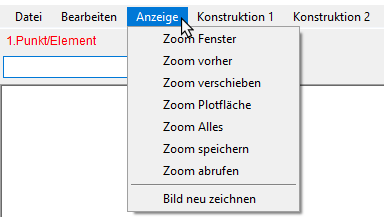 |